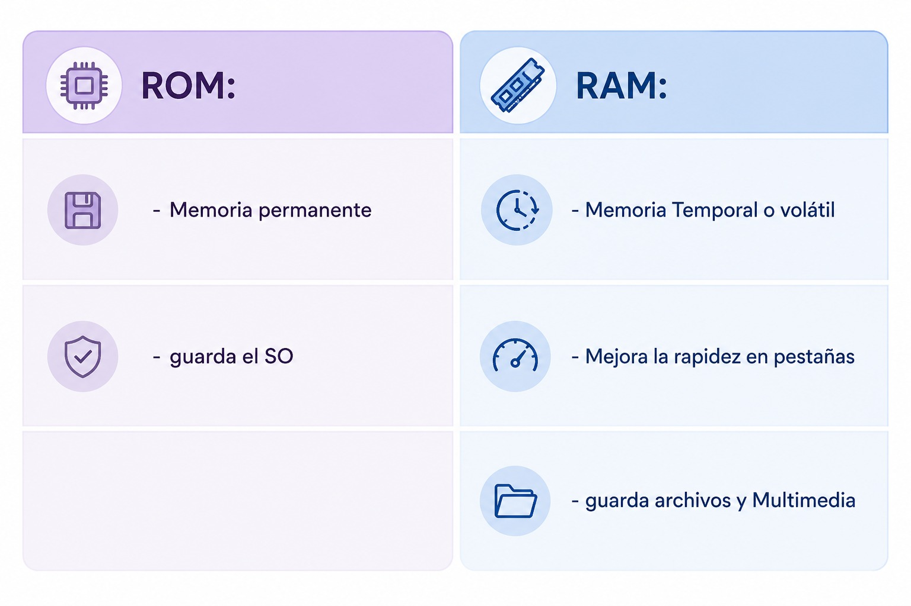

04/03 - ETAPA DE DIAGNOSTICO
Preguntas:
1-Definan Sistema operativo
Un sistema operativo es un conjunto de programas para el funcionamiento correcto de la computadora, es como el intermediario entre el hardware y el software.
Escribe aquí el contenido de la actividad.
2- Diferencia de memoria RAM y ROM

3- Mencionar 2 ejemplos de mantenimiento preventivo
- Desfragmentar disco duro
- Actualizar drivers
4-Herramientas de un tecnico
- TESTER
- DESTORNILLADOR CON CABEZA MULTIPLE
- PHILIPS
- TARJETA
- PULSERA ANTIESTATICA
- ALCOHOL ISOPROPILICO
- PASTA TERMICA
- AIRE COMPRIMIDO
- SOLDADOR
5- Que deberia Tener en cuenta ante de actualizar un PC.
Antes de actualizar deberías crear una copia de seguridad, cerrar las pestañas del sistema, y fijarse en tener buena conexion de corriente a la hora de actualizar
6- Describan que es Back up o copia de seguridad
- respaldo de datos / Copia de archivos que permite recuperarlos si ocurre: perdida, daños, errores, si se rompe el disco, hay virus.
- restaura datos que se copiaron en el guardado en: pendrive / disco externo / nube